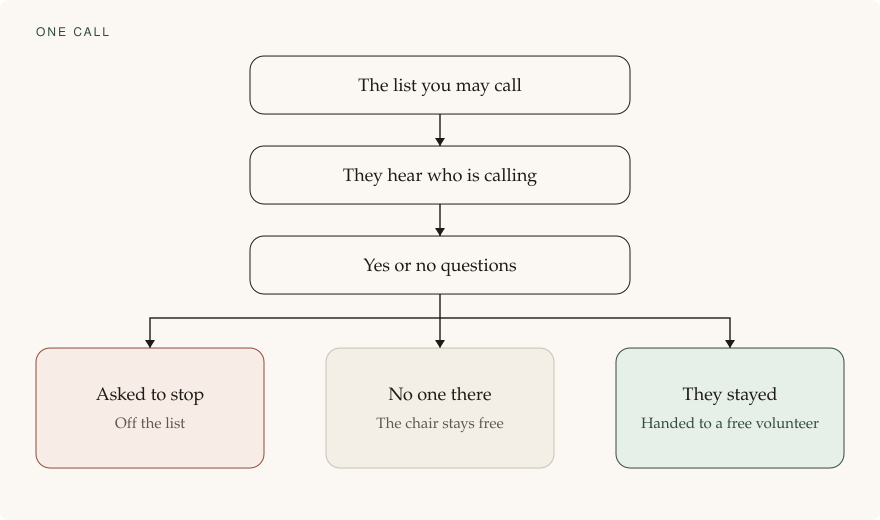

This is the full list. The first riding uses the items marked for now. The rest wait until after 24 October.
In the room, this riding
A page in the browser, on the computers already in the centre. Nothing to install.
Large type, one column, a dark page, and buttons that are easy to hit.
The script is on the screen. A listen button plays it on that computer only. It does not place a call.
The next person who stayed is ready for a caller. The caller writes a note, and can undo the last one.
If the page is refreshed, it returns to the same person.
An optional sound when a call is waiting.
Search, and filters for passed, failed, transferred, and removed.
A caller cannot download the whole list, change the hours, or turn calling on.
The handoff, this riding
When someone stays, the call is transferred to a free volunteer. The volunteer picks up a person who is ready to talk. They do not spend the chair on a recording, a voicemail, or a person who wants off the list.
One transfer is placed for each free volunteer. If no one is free, the call ends instead of holding. A person calls back later.
The call, this riding
The recorded voice says who is calling and gives a callback number. Then it asks yes or no.
It does not ask for a vote, a donation, or support. A person in the room does that.
One recorded call is in flight for each free caller. People are not piled on hold.
If the caller does not pick up quickly, the line ends and a person calls back later. The recording does not dial that number again.
A key takes someone off the list. They are not transferred, and they are not called again.
A machine or a fax ends after the greeting.
Pause stops new calls and does not cut off a call already going. Stop ends the calls this desk started and blocks the next one.
Canada only. Yukon, the Northwest Territories, and Nunavut are not called. A number is called once.
Hours are daytime, Pacific time, including the spring and fall clock change. Outside those hours, nothing dials.
You can hear the greeting before the room uses it.
One test call to a number you choose. Then the test locks.
Recording is off unless you turn it on. If it is on, the greeting says so.
English first.
The number shown on the person’s phone is one the party controls. If it is missing, nothing dials.
The opening also includes an email or a mailing address, kept valid for 60 days, and the purpose in one line.
No text and no email to the people on the list.
A removal is kept at least three years.
The phone bill is counted in steps of six seconds. That is the closest available right now. A full minute, rounded up, will not be used. A true one-second account can replace it later, if one is found.
The list, this riding
You load a list you already have a right to call.
The page shows which rows it will skip, and why: duplicate, bad number, territory, already called, or asked to stop.
You confirm permission in one sentence. Without that, nothing dials.
Replacing the list asks you first.
Only one shift runs on a list at a time.
You can split the riding so two people work at once, without calling the same number twice.
The next shift starts where the last one stopped.
Money and the end of the shift, this riding
You see how many calls and about how many seconds, before the shift starts.
Seconds add up while the room is open. Willing calls are shown against the US dollars spent.
A limit for the day, in US dollars, stops the shift. Two calls at the same moment cannot slip past it.
At the end of the day you get one sentence: reached, willing, spoke with someone, asked to stop, and seconds billed.
You can download the results without opening a database.
Sign-in, this riding
Your email is your username. You set a password.
A second check: a code from an authenticator, or a code by email. A passkey works as well.
1Password can fill these. It is not required, and it is not the only way in.
You can recover a forgotten password, or a lost passkey, with the password and one second check.
You can sign out of other sessions. A caller’s session ends after it sits idle.
Too many wrong passwords locks the sign-in for a short time. You can unlock it.
Turning calling on, exporting the list, allowing a list, or turning recording on asks you to confirm again.
You invite the room by email. They do not see setup.
Setup, this riding
The first visit walks through the steps. You can leave and come back.
Set up again opens the same steps, and asks before it replaces a list, a name, or a connection.
A connection says Connected or Not connected. It never shows a secret.
The home page is four lines: List, Mail, Phone, Outbound. Outbound stays off until the separate step.
A failed connection says what failed, and that nothing was called.

The same path as on the first page. This is the feature, drawn once.
The phone companies we looked at
Checked 29 September 2026. Two companies. No contract is signed.
VoIP.ms. A Canadian phone company. Their published rule for calls in Canada is six-second steps. A five-second call is billed as six seconds, not as a full minute. Calls inside the ten provinces are published at half a cent per minute, in US dollars. VoIP.ms bills the account in US dollars, not Canadian dollars. The territories are much more expensive, which is why those numbers stay off the list. This is the account the riding can use. Their pages: Canada rates and how they bill.
Telnyx. Their published rule is sixty seconds. An eleven-second call is billed as a full minute. They say they no longer offer six-second billing. That company will not be used for this riding. Their page: billing increments.
How a call is rounded, from their own pages:
How long someone stayed
VoIP.ms bills
Telnyx bills
5 seconds
6 seconds
60 seconds
11 seconds
12 seconds
60 seconds
32 seconds
36 seconds
60 seconds
61 seconds
66 seconds
120 seconds
96 seconds
96 seconds
120 seconds
At VoIP.ms, Canada inside the ten provinces is published at half a cent per minute, in US dollars. A 5-second call then costs about a twentieth of a cent. A 32-second call costs about three tenths of a cent. Telnyx bills in US dollars. It does not publish one Canada rate on the page we checked, so the amount is not shown here. The time they bill is: a short call becomes a full minute, and a call just over a minute becomes two.
No company we found bills a true one second at a time and also does the whole phone job. If one appears, it can replace VoIP.ms.
The server and the front door
The list stays in Canada. A machine in Hillsboro, Oregon is not used for this riding, because the voter list, the notes, and the removal list would leave the country. The Hillsboro price published earlier is not the price for this shift.
Cloudflare is only the front door. The name lookup and the door in front of the page are on the free plan. That part is $0. The list is not cached there. A domain name, if it is bought there, is a separate yearly fee in US dollars. Cloudflare does not bill that fee in Canadian dollars.
If a provider refuses the campaign
The companies named on this roadmap are the ones that fit the published rules as of 29 September 2026. None of them has been asked, in this study, to accept a political canvassing campaign for OneBC.
If VoIP.ms, the Canadian machine, or the front door refuses the use because of compliance, dialing stops. A new study then names only the providers that will actually carry this campaign. A refused provider is not replaced quietly. Telnyx is already out, because it bills a full minute, not because it refused the campaign.
After this riding
A Connect button for NationBuilder, then HubSpot, Maximizer, Salesforce, CiviCRM, or a Google Sheet. The first riding only needs the file.
Sign in with Google or Microsoft.
French for the recorded lines, and a caller matched to someone in the room who speaks that language.
A second riding, a phone app, or a new script. Each is its own quote.
Not in this product: a contact system of our own, numbers taken off the internet, a medical-records connection, or a server for you to run.